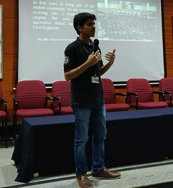

The Idea!

This small Application demonstrates how to geocode an address using mapbox api implemented in openlayers v6. Additionally, on-click of search, the map gets zoomed to the location of Interest.
The idea stems from google maps search functionality wherein you type the address and it zooms in to the location of interest. We replicate this exact functionality with mapbox API for geocoding and openlayers for client side zoom to the address of interest.
About

I am a civil engineering graduate from Rashtreeya Vidyalaya College of Engineering. I care about all things geospatial and AI.
So far I've had experience working on Django, Openlayers, Jquery, postgresql/postgis, geoserver, qgis/arcgis, S3 and ec2 in professional carrer and while in college I got to work on GEE, Adobe suites, MS Office suites.
I regularly write on Quora, tweet about FOSS, Deep Learning and my wild thoughts.
When I'm not on my laptop, I'm usually seen in park, jogging and playing batminton.
My Strengths include communication, adaptive learning and problem solving. I like keeping things clean, be it my code or my wardrobe.